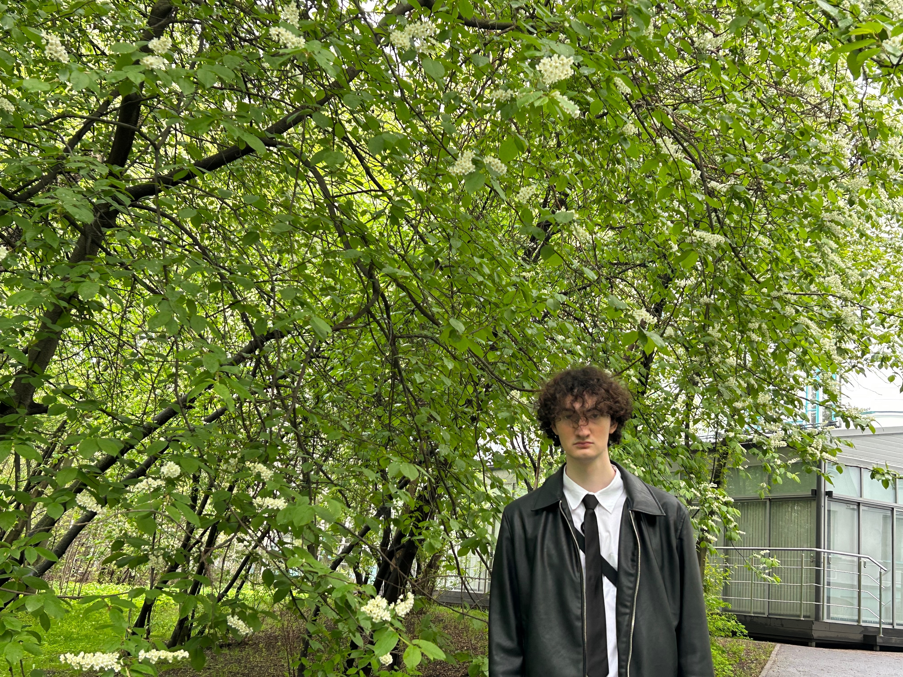
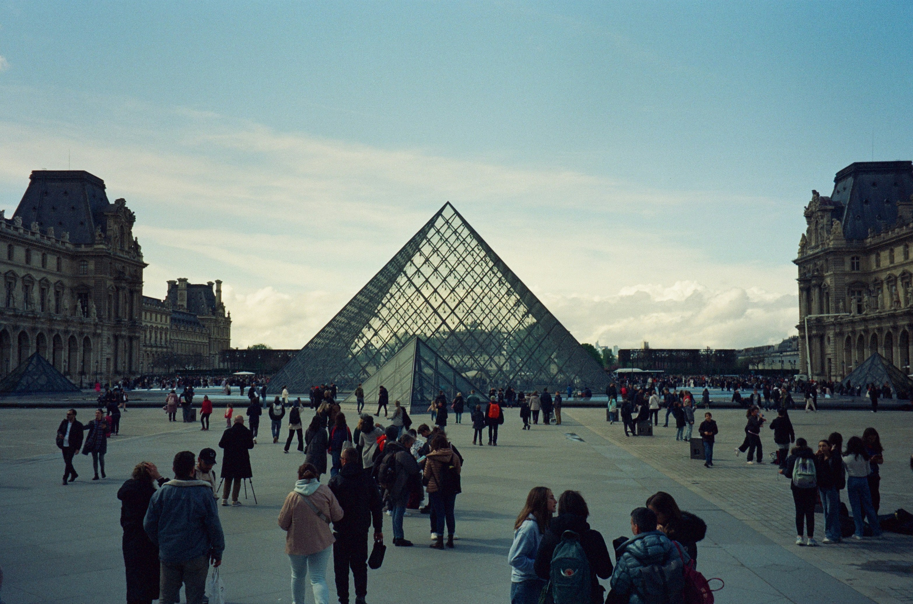
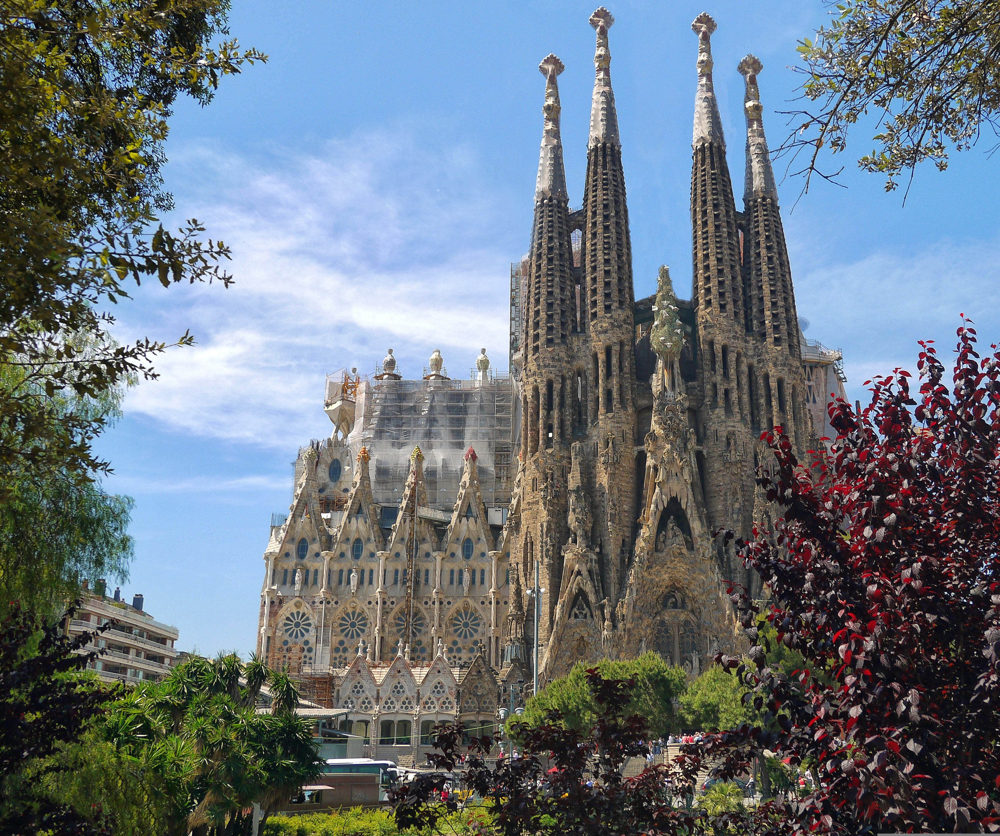
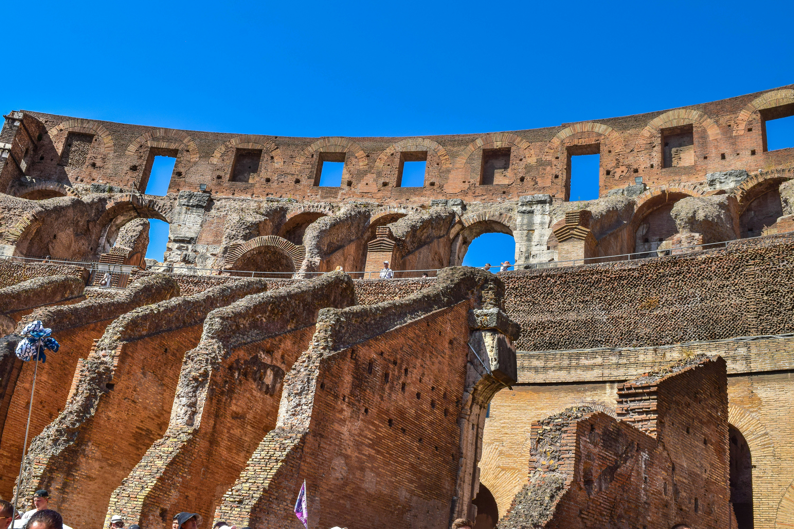
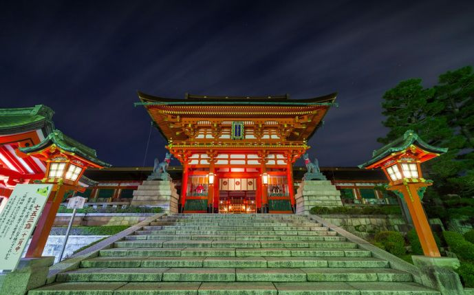
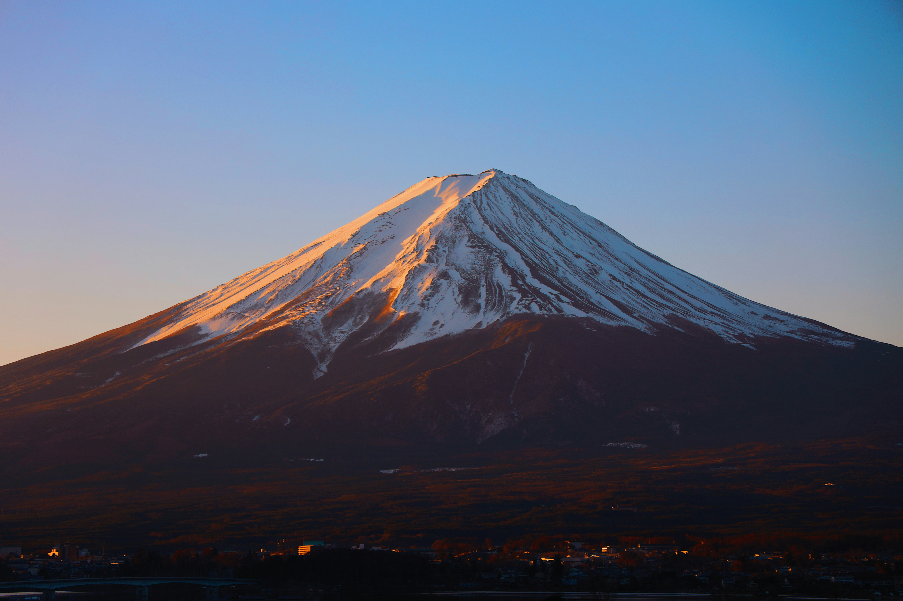
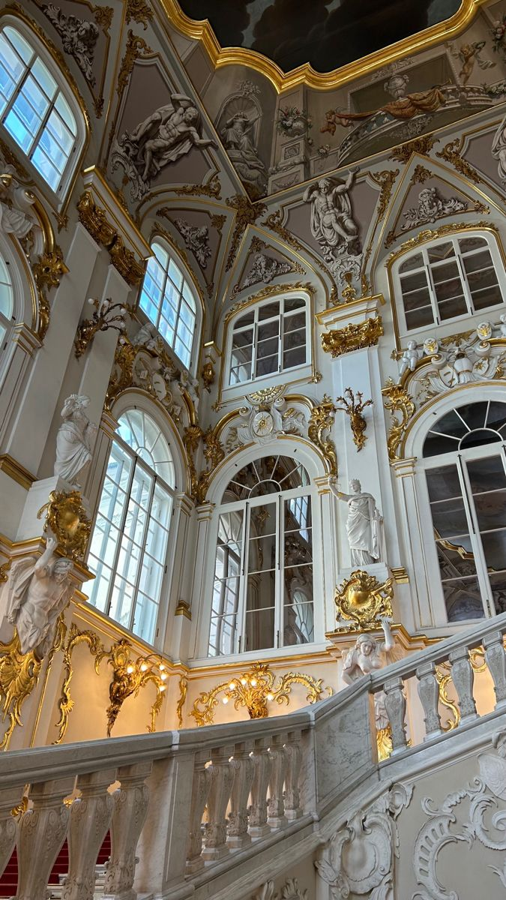

Цифровой скетчинг
Ежедневные быстрые зарисовки силуэтов, изучение световых схем и динамики поз.
Студент, цифровой художник и концепт-визуализатор

Ежедневные быстрые зарисовки силуэтов, изучение световых схем и динамики поз.
Лепка фактурных ваз и скульптурных миниатюр из глины с последующей ручной росписью глазурью.
Уличная съёмка на механическую камеру 35мм с акцентом на геометрию архитектуры и тени.

Величайший музей мира со стеклянной пирамидой и колоссальной коллекцией классического искусства.

Невероятная органика архитектуры Гауди, сочетающая готику, модерн и природные формы.

Монументальный памятник античной архитектуры, вдохновляющий своими масштабами и историей.

Бесконечные ярко-красные ворота тории, создающие мощную пространственную перспективу.

Классический визуальный символ минимализма и гармонии в традиционной пейзажной живописи.

Барочная архитектура Зимнего дворца и залы с эталонными полотнами европейских мастеров.
Комплексная визуализация футуристического полиса с элементами классической архитектуры.
Экспозиция серии графических портретов в рамках межвузовского фестиваля.
Разработка бестиария и иллюстраций фантастической флоры и фауны.
Проектирование визуального стиля главных персонажей и игровых локаций.
Приветствуем, Гость!